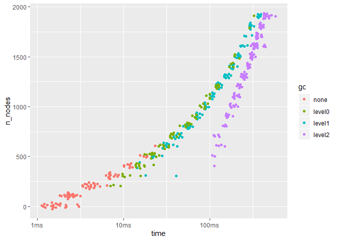

Introduction
In social networks, actors tend to associate with others who are similar in some way, such as race, language, creed, or class. This phenomenon is called homophily.
The {homophily} package provides flexible routines to measure mixing patterns using generic methods that are compatible with <network> and <igraph> objects, including {tidygraph}’s <tbl_graph> objects.
Usage
data("jemmah_islamiyah", package = "homophily") # undirected <igraph>
data("sampson", package = "ergm") # directed <network>Mixing Matrices
We can easily build classical mixing matrices for undirected and directed graphs.
Remixing Mixing Matrices
We can also build generalized mixing matrices to explore mixing patterns across different dimensions.
For example, if we want to explore ties between each individual node and a group attribute, we can provide arguments to both dim1= and dim2=.
We’ll use the {network} convention of node names being stored in an attribute called "vertex.names" to see mixing patterns between each node and the "group" attribute.
#> 18 x 3 Matrix of class "dgeMatrix"
#>
#> Turks Outcasts Loyal
#> John Bosco 9 3 5
#> Gregory 11 3 1
#> Basil 3 5 0
#> Peter 0 0 9
#> Bonaventure 3 2 8
#> Berthold 1 0 5
#> Mark 8 2 1
#> Victor 4 0 7
#> Ambrose 2 0 6
#> Romauld 1 1 6
#> Louis 3 0 5
#> Winfrid 10 0 1
#> Amand 1 4 3
#> Hugh 8 0 3
#> Boniface 8 0 1
#> Albert 6 0 2
#> Elias 1 5 0
#> Simplicius 3 6 0Going further, we can also explore mixing patterns across group attributes. samplike’s "cloisterville" attribute notes whether each individual attended the Cloisterville monastery.
For directed graphs, the default behavior considers both outgoing and inbound ties, but you can provide "out" or "in" to direction= as desired.
E-I Index
#> command team operation assistant bomb maker suicide bomber Team Lima
#> 0.8064516 0.7142857 -0.3333333 1.0000000 -1.0000000#> MUKLAS AMROZI IMRON SAMUDRA DULMATIN IDRIS MUBAROK AZAHARI GHONI
#> 0.5555556 0.5000000 1.0000000 0.7333333 0.1111111 0.6000000 0.3333333 0.1111111 0.1111111
#> ARNASAN RAUF OCTAVIA HIDAYAT JUNAEDI PATEK FERI SARIJO
#> 1.0000000 -0.2000000 -0.2000000 -0.2000000 -0.2000000 0.1111111 1.0000000 0.1111111#> John Bosco Gregory Basil Peter Bonaventure Berthold Mark Victor
#> -0.05882353 -0.46666667 -0.25000000 -1.00000000 -0.23076923 -0.66666667 -0.45454545 -0.27272727
#> Ambrose Romauld Louis Winfrid Amand Hugh Boniface Albert
#> -0.50000000 -0.50000000 -0.25000000 -0.81818182 0.00000000 -0.45454545 -0.77777778 -0.50000000
#> Elias Simplicius
#> -0.66666667 -0.33333333Benchmarks
library(tidyr)
library(bench)
library(ggplot2)
library(igraph)
build_it <- function(n_nodes, prob = 0.25, dir = TRUE) {
g <- random.graph.game(n_nodes, prob, directed = dir)
vertex_attr(g, name = "group") <- sample(letters, n_nodes, replace = TRUE)
g
}
bench_it <- function(bench_foo, seq_nodes = seq(10, 2000, by = 100), ...) {
all_res <- lapply(seq_nodes, function(x) {
g <- build_it(x)
res <- mark(
bench_foo(build_it(x), node_attr_name = "group"),
iterations = 20
)
res[["n_nodes"]] <- x
res
})
do.call(rbind, all_res)
}set.seed(831)
res <- bench_it(ei_index)
res %>%
unnest() %>%
ggplot(aes(x = n_nodes, y = time)) +
ggbeeswarm::geom_quasirandom(aes(color = gc)) +
coord_flip()
Cite
#>
#> To cite homophily use:
#>
#> Knapp, B. G. (2019). homophily: Measuring Network Homophily Data. R package version
#> 0.0.0.9 Retrieved from https://knapply.github.io/homophily
#>
#> A BibTeX entry for LaTeX users is
#>
#> @Manual{homophily-package,
#> title = {homophily: Measuring Network Homophily},
#> author = {Brendan Knapp},
#> year = {2019},
#> note = {R package version 0.0.0.9},
#> url = {https://knapply.github.io/homophily},
#> }